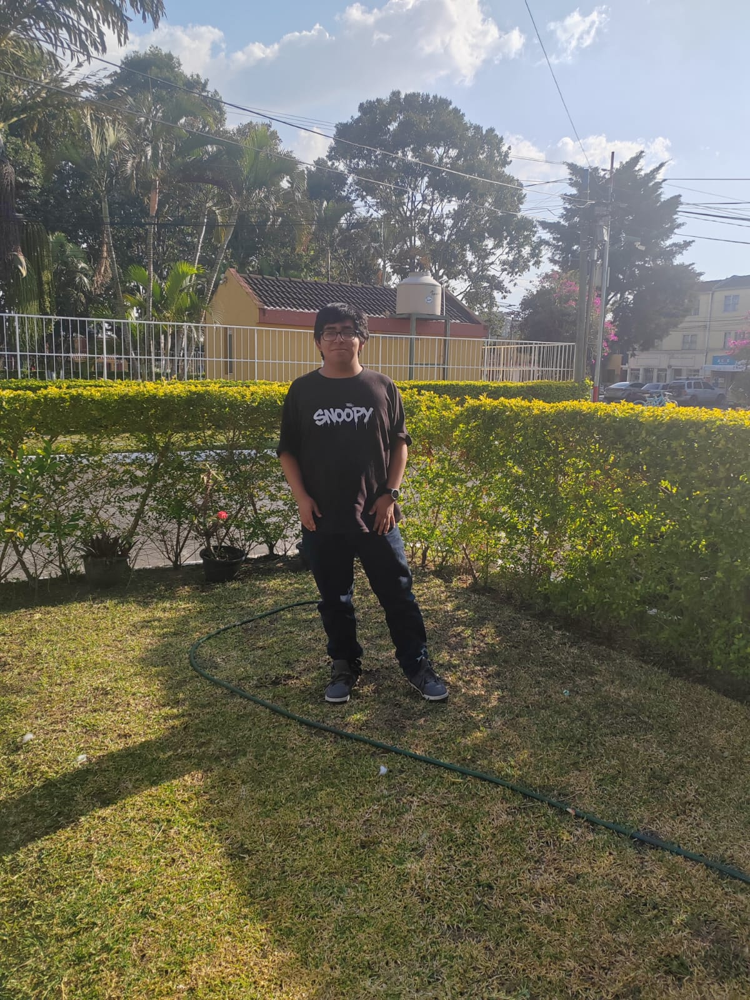

Estudiante de Ingeniería en Sistemas

Estudiante de Ingeniería en Sistemas de la universidad Mariano Galvez de Guatemala primer ciclo.
El curso de Desarrollo Humano desde un enfoque integral está diseñado para acompañar al estudiante de ingeniería en un proceso consciente de crecimiento personal, social y ético, reconociendo que el verdadero desarrollo va más allá del éxito material o académico.
Ver proyectoEl curso de Metodología de la Investigación está diseñado para proporcionar a los estudiantes las herramientas necesarias para realizar investigaciones científicas rigurosas, incluyendo el diseño de estudios, la recolección y análisis de datos, y la redacción de informes académicos.
Ver proyectoEl curso de Contabilidad I está diseñado para proporcionar a los estudiantes las bases necesarias para comprender y aplicar los principios contables en el contexto empresarial.
Ver proyectoEl curso de Introducción a los sistemas de computo está diseñado para proporcionar a los estudiantes las bases necesarias para comprender y aplicar los principios de las bases de datos y los lenguajes de programación.
Ver proyectoEl curso de Lógica de Sistemas está diseñado para proporcionar a los estudiantes las bases necesarias para comprender y aplicar los principios de la lógica en el contexto de los circuitos fisicos y digitales.
Ver proyectoTelefono: 8972-4584